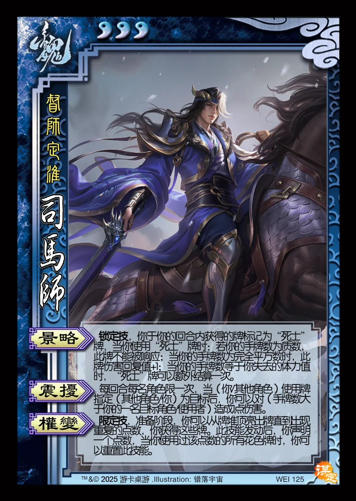

点击卡面查看大图
魏
谋司马师
♥3督师定淮
景略锁定技
锁定技，你于你的回合内获得的牌标记为“死士”牌，当你使用“死士”牌时：若你的手牌数为质数，此牌不能被响应；当你的手牌数为完全平方数时，此牌伤害回复值+1；当你的手牌数等于你失去的体力值时，“死士”牌可以额外结算一次。
震扰
每回合每名角色限一次，当（你/其他角色）使用牌指定（其他角色/你）为目标后，你可以对（手牌数大于你的一名目标角色/使用者）造成1点伤害。
权变限定技
限定技，准备阶段，你可以从牌堆顶亮出牌直到出现重复的点数，你获得这些牌。此技能发动后，你声明一个点数，当你使用过该点数的所有花色牌时，你可以重置此技能。